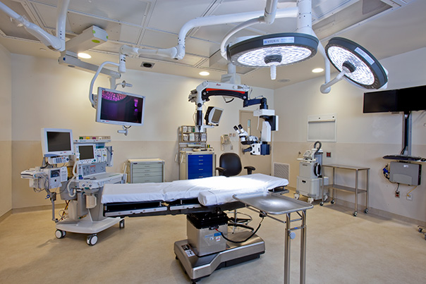
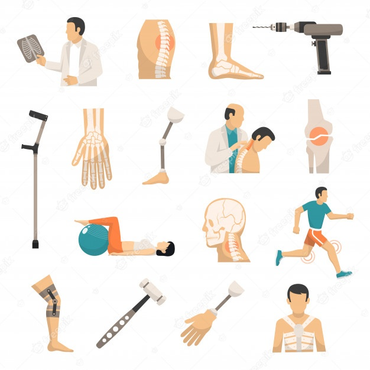

Dentro de las especialidades que brinda el centro medico, se cuenta con las siguientes, la cual son el fuerte a nivel de la institución,
es importante mencionar que el Hospital Metropolitado brinda la mejor antención a sus paciente para darle una mejor calidad de vida.
Medicina General
Cirugía Ambulatoria

Ortopedia

Cardiología